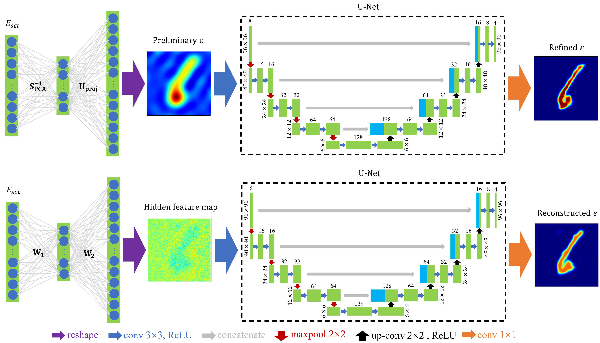
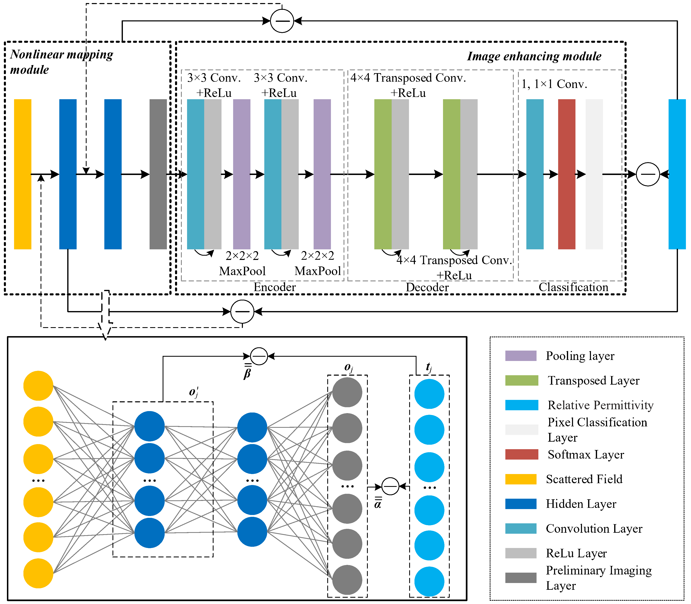
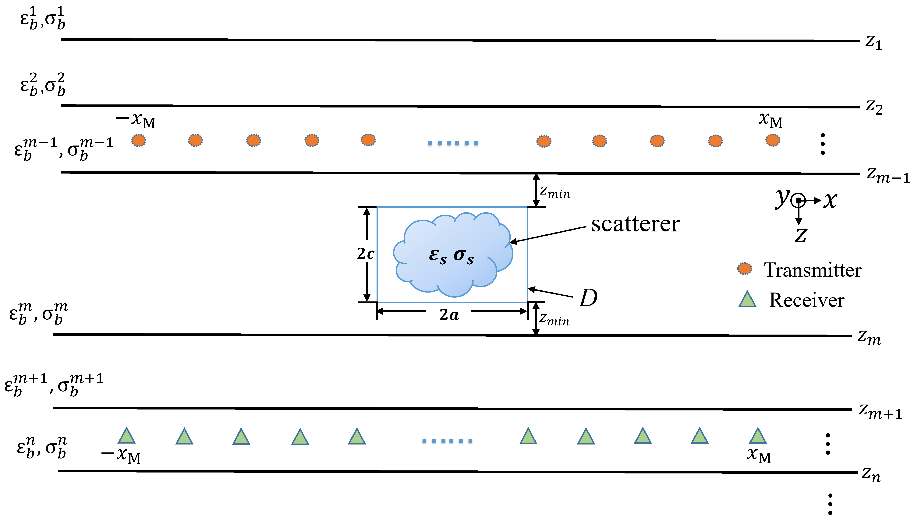
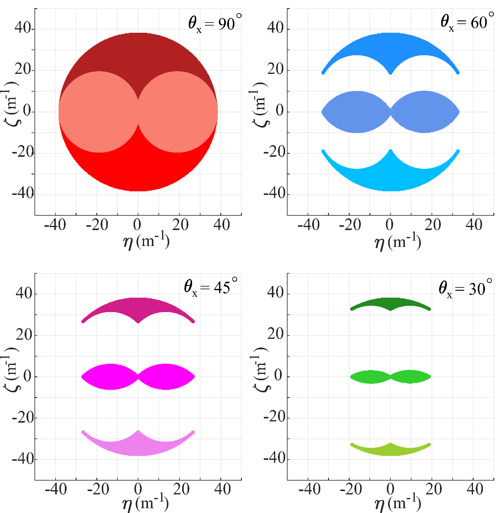
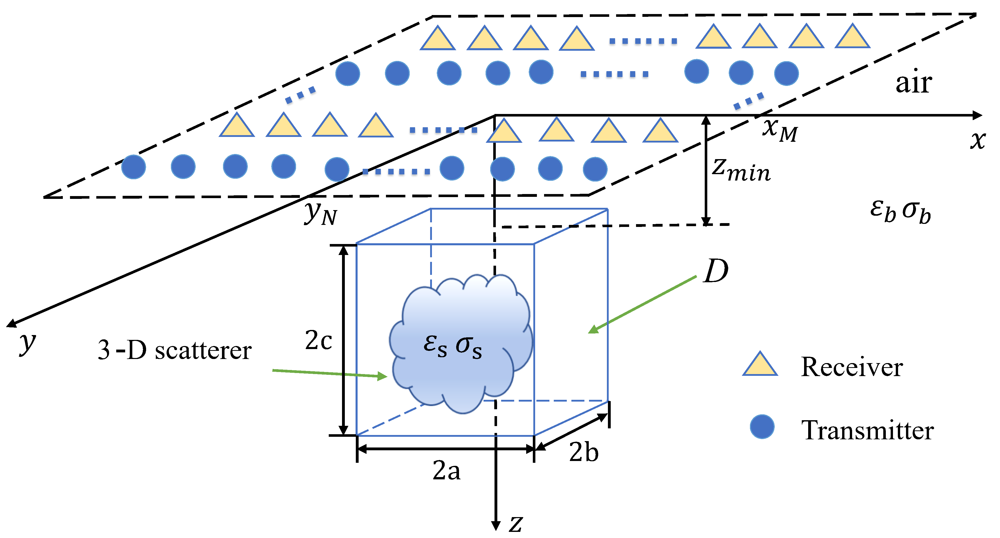
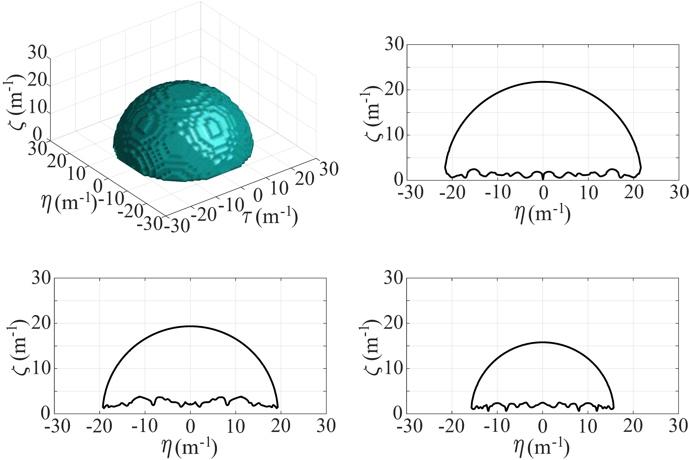
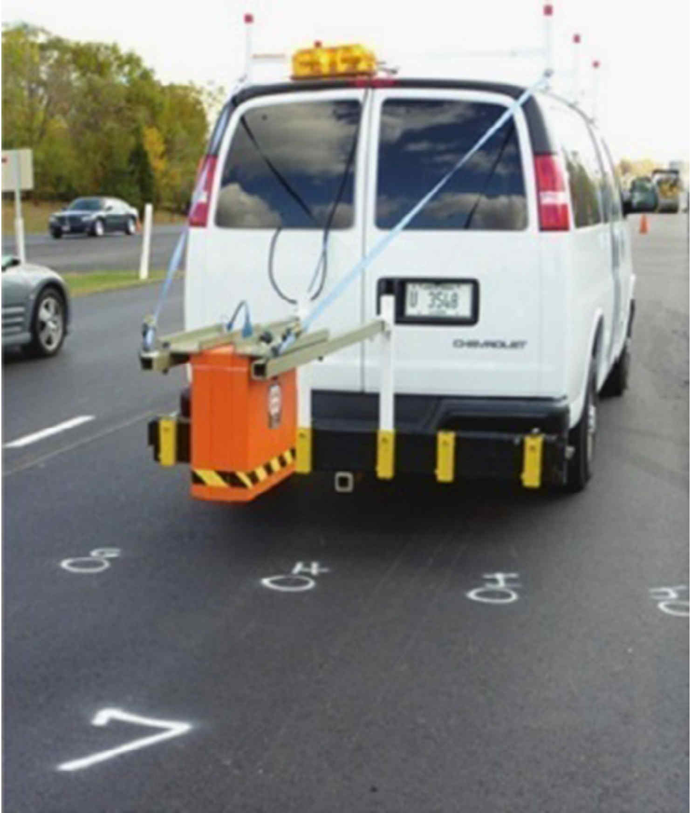
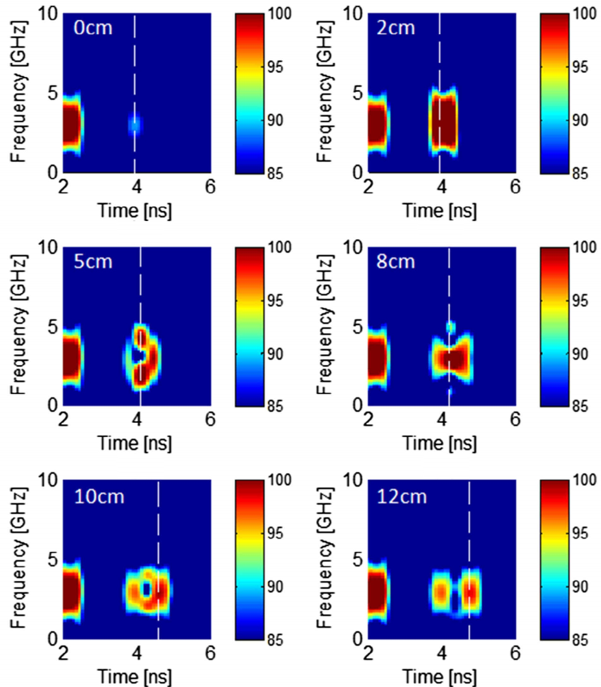
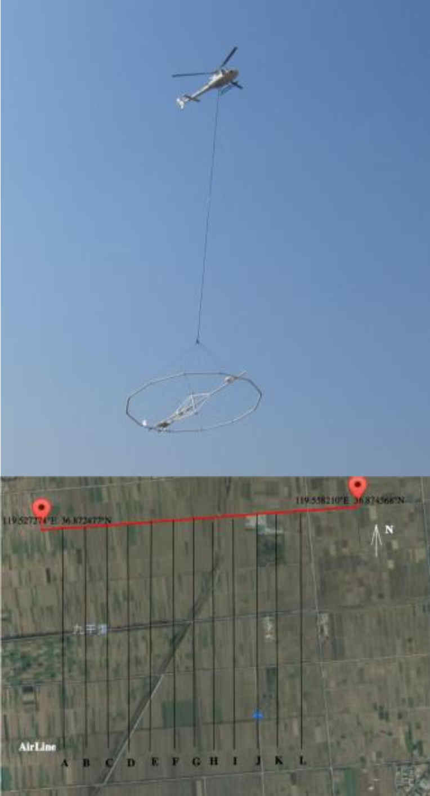
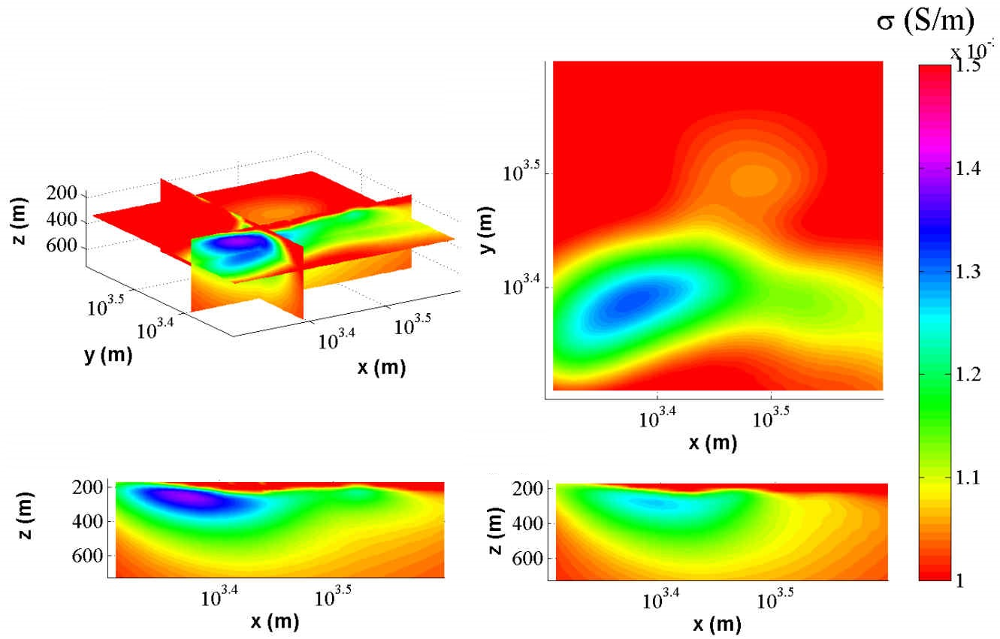

Research
Our research focuses on computational electromagnetic imaging (CEMI). We use electromagnetic waves to detect  the unknown real world by constructing highly efficient mathematical models to simulate wave propagation and developing advanced inverse algorithms to reliably and rapidly reconstruct images from recorded electromagnetic signals. Our primary areas of study heavily rely on numerical computation, optimization algorithms,
probability and statistics, antenna array theory, machine learning, and geophysical exploration methods.
the unknown real world by constructing highly efficient mathematical models to simulate wave propagation and developing advanced inverse algorithms to reliably and rapidly reconstruct images from recorded electromagnetic signals. Our primary areas of study heavily rely on numerical computation, optimization algorithms,
probability and statistics, antenna array theory, machine learning, and geophysical exploration methods.
Our current research initiatives at CEMI are concentrated on several cutting-edge thrusts:
The development of sophisticated forward and inverse models adapting to complex electromagnetic scattering scenarios.
The deep fusion of physics-based models of electromagnetic scattering with artificial neural networks.
The optimization of antenna array layout in electromagnetic inversion problems.
The application of state-of-the-art technologies to subsurface imaging and the exploration of deep Earth resources.
Electromagnetic Scattering And Inverse Scattering in Complex Environments
Electromagnetic scattering refers to the physical process in which an incident wave interacts with specific targets immersed inside an ambient medium, leading to changes of the wave's propagation direction, amplitude, phase, and polarization, as recorded by sensors. Inverse scattering, typically characterized by purely mathematical models, is the reverse process used to retrieve the target parameters from the sensor data. Both electromagnetic scattering and inverse scattering have extensive applications in the design of artificial materials, microwave imaging, subsurface detection, geophysical exploration, etc.
The real world is complicated. The electromagnetic scattering and inverse scattering usually occur in an environment filled with diverse media and multiple targets. On the one hand, the ambient medium is not necessarily homogeneous or isotropic. For example, in near-surface electromagnetic detection, the ambient medium is frequently modeled as planarly stratified. Additionally, in certain contexts, irregular topography can substantially influence scattered electromagnetic field data, necessitating its inclusion in the stratification model. In space exploration using radio waves, the ionosphere is considered a spherically stratified and anisotropic medium due to gravitational and geomagnetic influences. On the other hand, the targets immersed inside the ambient medium that scatter the incident wave often possess complex shapes and also exhibit notable inhomogeneity and anisotropy. For example, anisotropy at the subwavelength scale and macroscopic periodicity are commonly utilized in the design of artificial materials to manipulate electromagnetic wave propagation through and reflection from certain targets. In light of these considerations, we are pursuing the following research directions:

|

|

|
Efficient evaluation of Green’s functions in complex media, for example, layered, anisotropic, with a rough surface, etc.
Fast computation of electromagnetic scattering and full-wave inversion for complex objects immersed in a complex ambient medium.
Implementation of scattering and inverse scattering in different dimensions, including 1.5-D, 2-D, 2.5-D, and 3-D.
Spectral-domain methods account for the fast computation of electromagnetic scattering from smooth objects or periodic structures.
Electromagnetic Full-Wave Inversion Based on Physics-Driven Artificial Neural Networks
Electromagnetic full-wave inversion essentially maps the measured field dataset to the scatterer model parameter set. Unfortunately, due to the intrinsic nonlinear relationship between the field data and model parameters, iterations are inevitable in the inversion. This directly leads to the highly demanding computational cost. The artificial neural network can significantly reduce the cost by learning/storing the partial/complete nonlinear relationship between the field data and scatterer model parameters in the offline training stage and thus accomplishing the inversion instantaneously in the online prediction stage. The neural network is usually trained by the big data in the field data space, in the model parameter space or in the mapping space. In this way, the neural network is a purely data-driven black box. It neglects the domain knowledge of electromagnetic scattering hidden behind the training data and thus is difficult to explain and predict.
A physics-driven artificial neural network plays the role by fusing the known domain knowledge into the architecture or training process. This not only makes the neural network explainable and predictable but also reduces the training data amount and lowers the cost. For example, Green's functions in the integral equations formulating the electromagnetic scattering are explicitly known. Directly embedding their values in the network not only makes the network structure more consistent with the scattering physical mechanism but also avoids redundant learning in the training process. Using the differential operators of a neural network to describe the differential relationship between two physical variables in the Helmholtz equation is equivalent to mandatorily imposing known prior information in the training. Regularizing the network’s loss function by known scattering equations, e.g. integral equations or the Helmholtz equation can accelerate the training convergence and enhance the network's adaptability. Regarding these issues, we are working on following research directions:
|  |  |
Embeding physical variables such as Green's functions, basis functions, boundary conditions, differential operators, incident fields, etc. into the neural network.
Using mathematical equations describing electromagnetic scattering or prior information of the targets to constrain the training process of the neural network.
Extending the existing study on full-wave inversion based on neural networks to a broader scope: scattering and inverse scattering based on scientific machine learning.
Optimizing Antenna Array Layout for Optimized Inversion Performance
It is well-known that the configuration of a transceiver array directly influences the results of electromagnetic tomography. The common sense is that the lateral resolution heavily depends on the array aperture size while the radial one is mainly determined by the signal bandwidth. However, other factors such as antenna polarization, its radiation diagram, and coupling with the ambient medium also have non-negligible effects on the reconstruction of unknown targets. Therefore, it is of great importance to explore the most optimized antenna array layout to achieve the maximum reconstruction resolution in a certain electromagnetic detection scenario.
In the framework of integral equations, with Born approximation for weak scattering, the Fourier spectra of the scattered electromagnetic fields sampled at the receiver array and the reconstructable spectra of the unknown targets are linearly correlated. Reducing the array aperture size results in the “lowpass” phenomenon of the scatterer reconstructable spectra in the lateral direction. By contrast, in the radial direction, the variations of the reconstructable spectra are complicated. They usually show “bandpass”, “bandstop” or even “allpass” with the decrease of the array aperture size due to the antenna radiation coupling with the background layer interface or the mutual coupling between two orthogonal directions in the 3-D electromagnetic scattering. These studies are only for ideal electromagnetic inversion. In a practical electromagnetic detection scenario, the ambient medium may have rough surfaces or even show inhomogeneity and the unknown targets can have high dielectric contrasts with respect to the ambient medium. They will directly lead to the failure of the linear correlation between the scattered field spectra and the scatterer reconstructable spectra. Moreover, the traditional Green’s functions for infinitesimal dipoles are invalid for practical antennas, e.g. Vivaldi or horn ones, which also may disrupt the linear correlation. Regarding these issues, we are working on following research directions:
|  |  |  |  |
Deriving the spectral relationship between scattered fields and scatterers when a more practical layout, e.g. real antenna radiation pattern, is taken into account.
Discarding the Born approximation and deriving the spectral relationship for strong electromagnetic scattering, e.g. targets having high contrasts.
Building up a quantitative relationship between scattered field data and scatterer spectra based on differential equations adapting to arbitrarily inhomogeneous ambient media.
Developing a reasonable and efficient antenna array layout optimization approach for the electromagnetic full-wave inversion based on either integral or differential equations.
Subsurface Electromagnetic Imaging And Deep Earth Resource Exploration
Electromagnetic wave propagation has obviously different characteristics in different frequency regimes. In the high-frequency band, when the wavelength is much less than the concerned scale, the electromagnetic field shows high oscillation, and thus, the wave phenomenon dominates. In this situation, the targets can dramatically alter the wave direction, polarization, amplitude, phase, etc. via reflection, penetration, diffraction, interference, scattering, etc. The subsurface electromagnetic detection utilizes these wave parameter changes to infer the target parameters. For example, the reverse time migration obtains the target images by correlating the incident wave and the reflected wave in the timestamp of the target space position. The linear sampling method obtains the subsurface target images by converting the near-field electromagnetic field data recorded at the receiver array into the far-field spherically symmetric wave radiated by the fictitious focal source in the imaging domain. A more rigorous method, the full-wave inversion, can simultaneously obtain the subsurface target images and dielectric parameters by strictly solving the electromagnetic scattering equations.
In the low-frequency band, when the wavelength is much larger than the concerned scale, it is a completely different story. The electromagnetic field exhibits an obvious diffusive phenomenon. In this situation, the skin depth becomes large and the electromagnetic field is always used to explore the anomalies e.g. metallic orebodies, buried in the deep Earth region. Meanwhile, due to the loss of the wave property and the weak changes of the field amplitude and phase caused by the anomalies, ordinary imaging methods such as reverse time migration and linear sampling fail. The distribution of the underground resistivity is usually retrieved by full-wave inversion based on either the integral-equation forward solver or the differential-equation forward solver with absorbing boundary conditions.
|  |  |  |  |